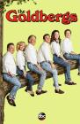
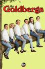

The Goldbergs
Stephen Klancher
...has seen 2
...has seen 0 hours
...has not seen 2.9 hours

Timeline
Most Recent:
A Goldberg Thanksgiving
...has seen 2
...has seen 0 hours
...has not seen 2.9 hours
Timeline
Most Recent:
A Goldberg Thanksgiving

The GoldbergsStephen Klancher ...has seen 2 ...has seen 0 hours ...has not seen 2.9 hours Timeline Most Recent: A Goldberg Thanksgiving  Watched an episode not known by IMDb? |